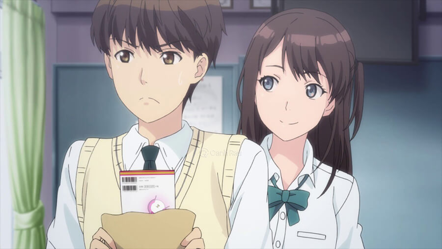

-Bộ phim “Tuổi thanh xuân của chúng ta” là một câu chuyện kể về những kỉ niệm đẹp nhất của hai nhân vật chính là Kotaro Azumi và Akane Mizuno.
-Bộ phim tái hiện lại quá trình trưởng thành của các nhân vật, về những mối quan hệ xung quanh. Những câu chuyện tình yêu tuổi mới lớn của cac cô cậu học trò trong độ tuổi dễ thay đổi được lồng ghép vào nội dung phim.
-Từ những người bạn thân thiết với nhau, 2 nhân vật chính Kotaro Azumi và Akane Mizuno vượt lên thành quan hệ người yêu. Quá trình này làm sao thiếu được cãi vã, giận hờn, hiểu lầm vu vơ,…Đấy lại cũng chính là chất xúc tác giúp họ sau mỗi lần cãi vã mối tình càng trở nên bền chặt hơn. Bộ phim đã gợi cho chúng ta nhớ lại tuổi thanh xuân tươi đẹp với vô vàn những cảm xúc thân thương đầu đời.
-“Khuyển Dạ Xoa” là bộ phim được chuyển thể từ bộ truyện tranh đoạt giải Shogakukan cùng tên. Bộ phim đã một thời tạo nên làn sóng mạnh trong làng giải trí Nhật Bản.
-Nội dung của bộ phim xoay quanh hành trình thu thập các mảnh vỡ ngọc Tứ Hồn của bán yêu Khuyển dạ xoa Inuyasha và một cô nữ sinh trung học tên là Higurashi Kagome.
-Trước đây, Inu Yasha đã bị nữ pháp sư trẻ tuổi Kikyo (tiền thân của Higurashi Kagome) phong ấn dưới gốc cây. Thời gian hàng trăm năm trôi qua, Higurashi Kagome xuyên không lại vô tình giải phong ấn cho Inuyasha. Từ đó, một cuộc tranh đoạt Tứ Hồn đã diễn ra và là cho viên ngọc bị vỡ thành nhiều mảnh tan tành.
-Kagome đã nhờ đến sự giúp đỡ của Inu Yasha để cùng cô thu thập những mảnh vỡ và ngăn chúng rơi vào tay những kẻ xấu. Tham gia cùng hai nhân vật này còn có tuyến nhân vật phụ là con cáo mồ côi Shippo, nhà sư thông minh Miroku và cô gái chuyên săn diệt yêu quái Sango.. Họ cùng nhau gạt bỏ những sự khác biệt của bản thân để làm việc với nhau và cùng tìm lại những mảnh vỡ của viên ngọc quyền lực. Chuyến phiêu lưu của họ bắt đầu từ đây.
-Lễ nghi phong giáo nhiều khi còn làm cho ta ngột ngạt đến chán chường. Nhân vật trong bộ phim này được khắc họa một cách chân thực điều đó. Nội dung xoay quanh chiều dài của những bộ phim đã kể về hành trình chông gai của một nữ y sư có tên Shirayuki để thoát khỏi một cuộc hôn nhân cưỡng ép và được đi khắp nơi chữa bệnh cho mọi người.
-Một hôm, Shirayuki đã vô tình bước vào vương quốc do hoàng tử Zen Wisteria cai trị. Những tình tiết hiểu lầm, nghi ngờ được đẩy lên cao trào. Nhưng sau tất cả, khi mọi chuyện đc làm rõ ra, họ dần trở thành những người bạn tốt. Và từ đó, khoảng cách giữa hai người như được kéo lại gần nhau hơn. Tình yêu giữa vị hoàng tử và một cô gái tóc đỏ của một vương quốc khác cũng từ đó mà chớm nở….
-Bộ phim “Giấc mơ họa sĩ truyện tranh” là một bộ phim nổi tiếng, lấy “trộm” trái tim của biết bao nhiêu khán giả. Bởi nội dung phim hấp dẫn cùng lối diễn xuất sắc, đi vào lòng người.
-Xuyên suốt những tập phim là câu chuyện cảm động về chặng đường phấn đấu đầy gian nan của nhân vật Mashiro Moritaka để từng bước trở thành một họa sĩ manga nổi tiếng giống như anh hùng thời thơ ấu của anh.
-May mắn luôn mỉm cười với những người biết cố gắng. Anh gặp được người bạn tốt bụng như Takagi Akito và Azuki Miho luôn sẵn sàng ủng hộ anh trong suốt chiều dài bộ phim.
-Chỉ đơn thuần với ước mơ và sự cố gắng của mình, Mashiro Moritaki luôn nỗ lực hết mình. Đó chính là y nghĩa nhân văn to lớn của bộ phim. Chúng ta hãy mơ ước và thực hiện ước mơ đó của mình ngay bây giờ. Để có thể biến giấc mơ thành hiện thực và không hề nản chí khi ta gặp chút khó khăn. Hãy cùng theo dõi hết 25 tập của bộ phim anime tình cảm kết thúc có hậu này để cảm thấy yêu đời hơn, bạn nhé.
-“Vệ sĩ ma cà rồng” kể về câu chuyện tình yêu đầy ngọt ngào và đầy chông gai giữa cô gái ma cà rồng Yuuki Cross và một anh chàng thợ săn vampire Zero Kiryu.
-Khi đang chìm đắm trong tình yêu với Yuuki thì anh chàng thợ săn Zero Kiryu mới nhận ra cô nàng lại chính là một ma cà rồng thuần túy. Liệu anh chàng Zero Kiryu sẽ buông bỏ mối hiềm khích với gia tộc ma cà rồng để ở bên Yuuki không? Hay anh sẽ bỏ lại tình yêu đang nở rộ của mình?
-Bộ phim anime tình cảm kết thúc có hậu này đã gửi đến mỗi chúng ta một thông điệp sâu sắc, tình yêu có thể vượt qua mọi rào cản của xã hội, kể cả những ngăn cách xã hội hay đó là sự phân biệt giống loài.
-Phim “Hãy thật lòng” là một bộ phim anime tâm lý tình cảm lãng mạn được nhiều bạn trẻ yêu thích. Bắt đầu bộ phim nói về nam chính Shouichi Kamita đào hoa và các hoa khôi tại trường học. Để giúp mình giải tỏa những căng thẳng mà các kì thi mang lại, Shouichi Kamita đã gặp và làm quen cùng lúc rất nhiều cô nàng xinh đẹp trong trường. Như Hikari Tsuneki đầy năng động và đáng yêu. Hay Kyouko Touno học giỏi và điềm đạm,…Không có gì để đẩy nội dung bộ phim lên cao trào khi những cô nàng bạn gái dần nhận ra sự xuất hiện của nhau. Từ đó, mọi rắc rối thi nhau kéo đến với anh chàng.

-Bộ phim chính là một lời cảnh tỉnh cho những ai đang quen nhiều người trong cùng một lúc, bởi trong chuyện tình cảm thay vì xem nó là một trò chơi giải trí thì hãy đối đãi với người khác bằng chính sự chân tình.
-“Sử ma của Zero” lấy bối cảnh tại thế giới giả tưởng. Ở đó, con đười được phân chia làm 2 loại: giới quý tộc là những người có thể sử dụng phép thuật. Còn nhóm người còn lại là nhóm bình dân, với những người không thể dùng phép thuật. Nhân vật chính của bộ phim là Louise de la Vallière, con gái thứ của một gia đình quyền quý.
-Louise theo học tại một ngôi trường phù thủy nhưng bản thân cô lại không hề biết sử dụng phép thuật.Từ đó, khiến cho cậu bé Saito Hiraga bất đắc dĩ trở thành người hầu cho cô chủ nhỏ Louise. Tình cảm của hai người ngày một tăng lên trong suốt cả khóa học. Họ cùng nhau khám phá ra nhiều điều bí ẩn mà đối phương không thể ngờ tới. Đó là trình độ phép thuật tệ hại của Louise và năng lực đỉnh cao của Saito.
-Bộ phim đã vẽ ra một thế giới phép thuật kỳ diệu với bao điều háo hức. Bởi vậy, nó đem lại cảm giác hồi hộp ở mỗi tập phim.
-“Rắc rối đáng yêu” kể về một câu chuyện tình yêu của một “đôi đũa lệch” Koizumi Risa và Ootani Atsushi. Trong khi cô nàng cao tận 1m7, vượt trội hơn hẳn các bạn học trong lớp và được mệnh danh là “cột cờ” vui tính thì anh chàng Ootani Atsushi với chiều cao khiêm tốn 1m56 chỉ với đến tai của cô. Hơn nữa tính cách của cả 2 lại cũng hoàn toàn đối lập nhau. Trong khi Koizumi Ría hoạt bát đáng yêu thì Ootani Atsushi lại điềm đạm, ít nói.
-Hai khúc “lồi, lõm” đứng cùng nhau, tạo nên một bộ đôi hài nổi tiếng nhất trường. Nhưng điều đó cũng không khiến cho tình cảm của họ bị xa cách. Ngược lại, có phải chính sự đối lập đã tạo nên sức hút cho bộ đôi không?
-Bộ phim được lấy viễn cảnh diễn ra tại một lục địa hỗn loạn. Sự hỗn độn này chính là sự đe dọa đến mọi người. May thay, những vị lãnh chúa của lục địa lại sở hữu Dấu thánh nên mới có thể bảo vệ người dân nơi đây. Tuy nhiên, người ta cũng không nghĩ đến khi các lãnh chúa không còn lo dẹp loạn , bảo vệ dân mà quay sang ẩu đả lẫn nhau để nhằm chiếm Crest của người khác về mình. Chính sự tham lam ấy khiến cuộc ẩu đả trở nên nghiêm trọng.
-Trong số những người dân ở đây, lại có 2 kẻ phản loạn vì căm ghét lãnh chúa mà giải cứu dân tình đó là nữ pháp sư Siluca Meletes và Kỵ sĩ Theo Cornaro. Siluca và Theo đã giao hẹn và lập với nhau một lời thề.nguyền vĩnh cửu để cứu vùng đất đầy rẫy phân tranh và loài người nơi đây.
-Bộ phim đã khiến một bộ phận lớn khán giả mãn nhãn với cuộc chiến ma pháp hoành tráng và rơi nước mắt trước cảnh người dân bị tàn sát vô cớ, thẳng tay.
-Nội dung bộ phim “Cô giáo tôi là người ngoài hành tinh” kể về câu chuyện tình cảm không phân biệt địa vị xã hội của hai nhân vật chính. Đó là nam sinh Kei Kusanagi và một cô giáo người ngoài hành tinh Mizuho Kazami.
-Khi cậu nam sinh Kei Kusanagi cảm thấy cô giáo của mình có những năng lực kì lạ, cậu đã khám phá ra vô vàn điều bí mật. Đặc biệt là thân phận của cô giáo Mizuho Kazami- nữ sĩ quan ngoài hình tinh và thuộc Liên Đoàn Thiên Hà.
-Từ đó, khơi dậy sự tò mò trong con người cậu nam sinh tuổi mới lớn. Cậu sinh ra hứng thú và tiếp xúc với cô giáo Mizuho Kazami nhiều hơn. Tình cảm của họ cũng vượt quá mức tình cảm cô trò lúc nào không biết. Và liệu tình cảm của họ có nở hoa không? Hãy theo dõi hết 13 tập của bộ phim anime tình cảm này để biết họ có đi đến một happy ending không nhé.